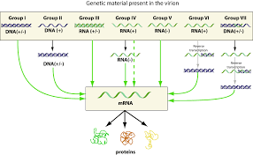
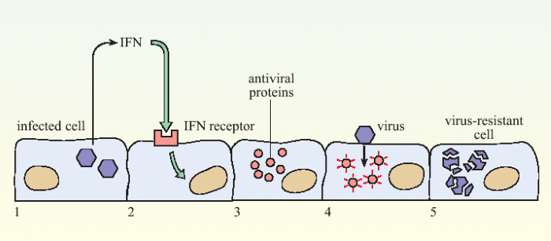
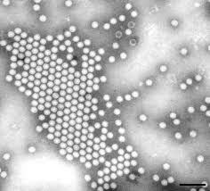

HISTORY OF VIRUSES
The word virus appeared in 1599 and originally meant "venom".
A very early form of vaccination
known as variolation was developed several thousand years ago in China. It involved the
application of materials from smallpox sufferers in order to immunize others.
In 1796
Edward Jenner developed a much safer method, using cowpox to successfully immunize
a young boy against smallpox, and this practice was widely adopted. Vaccinations against
other viral diseases followed, including the successful rabies vaccination by Louis Pasteur in 1886.
CLASSIFICATION
The most useful and most widely used classification system distinguishes
viruses according to the type of nucleic acid they
use as genetic material and the viral replication method they
employ to coax host cells into producing more viruses:
• DNA viruses (divided into double-stranded DNA viruses and single-stranded
DNA viruses),
• RNA viruses (divided into positive-sense single-stranded RNA viruses,
negative-sense single-stranded RNA viruses and the much less common double
-stranded RNA viruses),
• reverse transcribing viruses (double-stranded reverse-transcribing DNA viruses and single-stranded reverse-transcribing RNA viruses including retroviruses).

ORIGIN
1. Viruses arose from non-living matter, separately from yet in parallel to cells, perhaps in the form of self-replicating RNA ribozymes similar to viroids.
2. Viruses arose by genome reduction from earlier, more competent cellular life forms that became parasites to host cells and subsequently lost most of their functionality; examples of such tiny parasitic prokaryotes are Mycoplasma and Nanoarchaea.
3. Viruses arose from mobile genetic elements of cells (such as transposons, retrotransposons or plasmids) that became encapsulated in protein capsids, acquired the ability to "break free" from the host cell and infect other cells.
RESPONSE OF VERTEBRATE BODY
When the immune system of a vertebrate encounters a virus, it may produce specific
antibodies which bind to the virus and neutralize its infectivity or mark it for destruction.
Antibody presence in blood serum is often used to determine whether a person has been
exposed to a given virus in the past, with tests such as ELISA. Vaccinations protect
against viral diseases, in part, by eliciting the production of antibodies. Monoclonal
antibodies, specific to the virus, are also used for detection, as in fluorescence microscopy.
The second defense of vertebrates against viruses, cell-mediated immunity,
involves immune cells known as T cells: the body's cells constantly display short fragments
of their proteins on the cell's surface, and if a T cell recognizes a suspicious viral fragment there,
the host cell is destroyed and the virus-specific T-cells proliferate.
This mechanism is jump-started by certain vaccinations.
MODERN USES OF VIRUSES
A new application of genetically engineered viruses in nanotechnology was
recently described; see the uses of viruses in material science and nanotechnology.
For use in mapping neurons see the applications of pseudorabies in neuroscience.
Viruses are being used as vectors or carriers that take the required material
for treatment of a disease to various target cells. They have been studied
extensively in management of inherited diseases and genetic engineering as well
as cancers.

